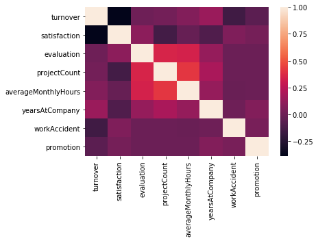
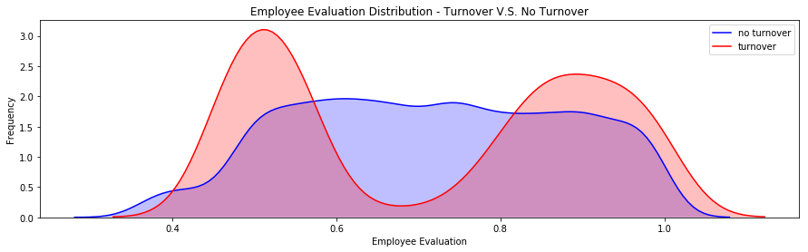
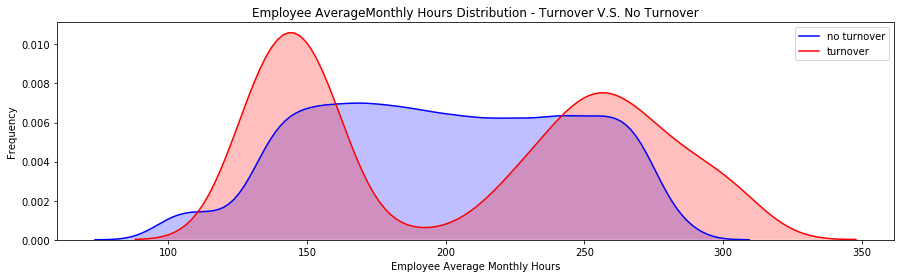
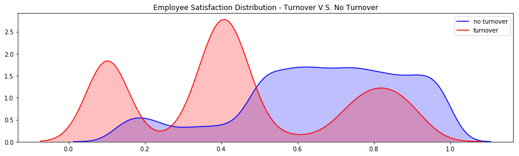
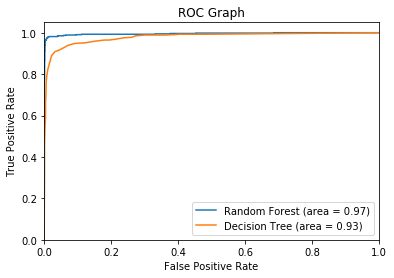
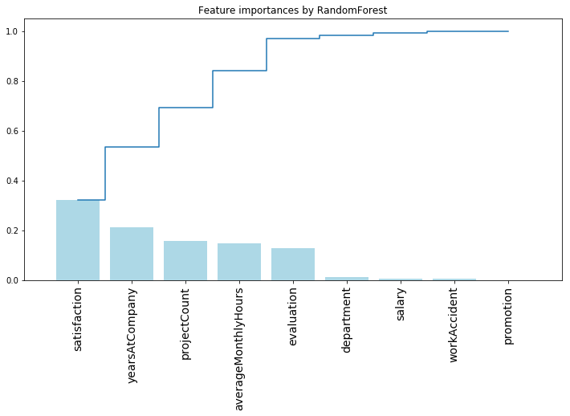
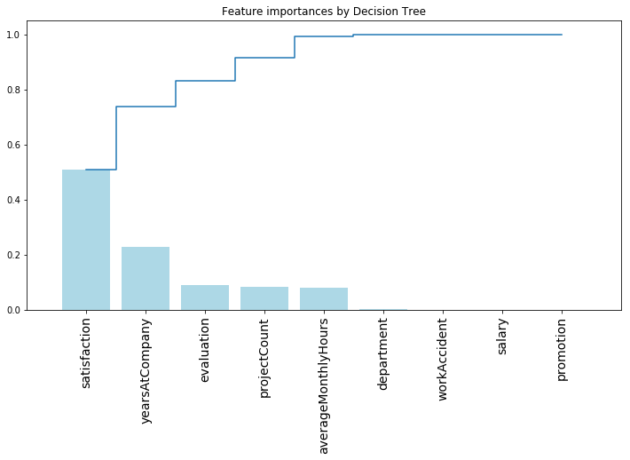

Attention
If adopted, please cite the author in the acknowledgement.
author:
Xinlei Deng, PhD,
Department of Environmental Health Science,
State University of New York at Albany
使用决策树和随机森林预测员工离职率
我们的任务是帮助人事部门理解员工为何离职, 预测一个员工离职的可能性.
数据来源: https://www.kaggle.com/ludobenistant/hr-analytics
获取数据
1 | # 引入工具包 |
1 | # 读入数据到Pandas Dataframe "df" |
数据预处理
1 | # 检测是否有缺失数据 |
satisfaction_level False
last_evaluation False
number_project False
average_montly_hours False
time_spend_company False
Work_accident False
left False
promotion_last_5years False
sales False
salary False
dtype: bool1 | # 数据的样例 |
| satisfaction_level | last_evaluation | number_project | average_montly_hours | time_spend_company | Work_accident | left | promotion_last_5years | sales | salary | |
|---|---|---|---|---|---|---|---|---|---|---|
| 0 | 0.38 | 0.53 | 2 | 157 | 3 | 0 | 1 | 0 | sales | low |
| 1 | 0.80 | 0.86 | 5 | 262 | 6 | 0 | 1 | 0 | sales | medium |
| 2 | 0.11 | 0.88 | 7 | 272 | 4 | 0 | 1 | 0 | sales | medium |
| 3 | 0.72 | 0.87 | 5 | 223 | 5 | 0 | 1 | 0 | sales | low |
| 4 | 0.37 | 0.52 | 2 | 159 | 3 | 0 | 1 | 0 | sales | low |
1 | # 重命名 |
1 | # 将预测标签‘是否离职’放在第一列 |
| turnover | satisfaction | evaluation | projectCount | averageMonthlyHours | yearsAtCompany | workAccident | promotion | department | salary | |
|---|---|---|---|---|---|---|---|---|---|---|
| 0 | 1 | 0.38 | 0.53 | 2 | 157 | 3 | 0 | 0 | sales | low |
| 1 | 1 | 0.80 | 0.86 | 5 | 262 | 6 | 0 | 0 | sales | medium |
| 2 | 1 | 0.11 | 0.88 | 7 | 272 | 4 | 0 | 0 | sales | medium |
| 3 | 1 | 0.72 | 0.87 | 5 | 223 | 5 | 0 | 0 | sales | low |
| 4 | 1 | 0.37 | 0.52 | 2 | 159 | 3 | 0 | 0 | sales | low |
分析数据
- 14999 条数据, 每一条数据包含 10 个特征
- 总的离职率 24%
- 平均满意度 0.61
1 | df.shape |
(14999, 10)1 | # 特征数据类型. |
turnover int64
satisfaction float64
evaluation float64
projectCount int64
averageMonthlyHours int64
yearsAtCompany int64
workAccident int64
promotion int64
department object
salary object
dtype: object1 | turnover_rate = df.turnover.value_counts() / len(df) |
0 0.761917
1 0.238083
Name: turnover, dtype: float641 | # 显示统计数据 |
| turnover | satisfaction | evaluation | projectCount | averageMonthlyHours | yearsAtCompany | workAccident | promotion | |
|---|---|---|---|---|---|---|---|---|
| count | 14999.000000 | 14999.000000 | 14999.000000 | 14999.000000 | 14999.000000 | 14999.000000 | 14999.000000 | 14999.000000 |
| mean | 0.238083 | 0.612834 | 0.716102 | 3.803054 | 201.050337 | 3.498233 | 0.144610 | 0.021268 |
| std | 0.425924 | 0.248631 | 0.171169 | 1.232592 | 49.943099 | 1.460136 | 0.351719 | 0.144281 |
| min | 0.000000 | 0.090000 | 0.360000 | 2.000000 | 96.000000 | 2.000000 | 0.000000 | 0.000000 |
| 25% | 0.000000 | 0.440000 | 0.560000 | 3.000000 | 156.000000 | 3.000000 | 0.000000 | 0.000000 |
| 50% | 0.000000 | 0.640000 | 0.720000 | 4.000000 | 200.000000 | 3.000000 | 0.000000 | 0.000000 |
| 75% | 0.000000 | 0.820000 | 0.870000 | 5.000000 | 245.000000 | 4.000000 | 0.000000 | 0.000000 |
| max | 1.000000 | 1.000000 | 1.000000 | 7.000000 | 310.000000 | 10.000000 | 1.000000 | 1.000000 |
1 | # 分组的平均数据统计 |
| satisfaction | evaluation | projectCount | averageMonthlyHours | yearsAtCompany | workAccident | promotion | |
|---|---|---|---|---|---|---|---|
| turnover | |||||||
| 0 | 0.666810 | 0.715473 | 3.786664 | 199.060203 | 3.380032 | 0.175009 | 0.026251 |
| 1 | 0.440098 | 0.718113 | 3.855503 | 207.419210 | 3.876505 | 0.047326 | 0.005321 |
相关性分析
正相关的特征:
- projectCount VS evaluation: 0.349333
- projectCount VS averageMonthlyHours: 0.417211
- averageMonthlyHours VS evaluation: 0.339742
负相关的特征:
- satisfaction VS turnover: -0.388375
思考:
- 什么特征的影响最大?
- 什么特征之间相关性最大?
1 | # 相关性矩阵 |
| turnover | satisfaction | evaluation | projectCount | averageMonthlyHours | yearsAtCompany | workAccident | promotion | |
|---|---|---|---|---|---|---|---|---|
| turnover | 1.000000 | -0.388375 | 0.006567 | 0.023787 | 0.071287 | 0.144822 | -0.154622 | -0.061788 |
| satisfaction | -0.388375 | 1.000000 | 0.105021 | -0.142970 | -0.020048 | -0.100866 | 0.058697 | 0.025605 |
| evaluation | 0.006567 | 0.105021 | 1.000000 | 0.349333 | 0.339742 | 0.131591 | -0.007104 | -0.008684 |
| projectCount | 0.023787 | -0.142970 | 0.349333 | 1.000000 | 0.417211 | 0.196786 | -0.004741 | -0.006064 |
| averageMonthlyHours | 0.071287 | -0.020048 | 0.339742 | 0.417211 | 1.000000 | 0.127755 | -0.010143 | -0.003544 |
| yearsAtCompany | 0.144822 | -0.100866 | 0.131591 | 0.196786 | 0.127755 | 1.000000 | 0.002120 | 0.067433 |
| workAccident | -0.154622 | 0.058697 | -0.007104 | -0.004741 | -0.010143 | 0.002120 | 1.000000 | 0.039245 |
| promotion | -0.061788 | 0.025605 | -0.008684 | -0.006064 | -0.003544 | 0.067433 | 0.039245 | 1.000000 |

1 | # 比较离职和未离职员工的满意度 |
未离职员工满意度: 0.666809590479516
离职员工满意度: 0.44009801176140917进行 T-Test
进行一个 t-test, 看离职员工的满意度是不是和未离职员工的满意度明显不同
1 | import scipy.stats as stats |
Ttest_1sampResult(statistic=-51.3303486754725, pvalue=0.0)T-Test 显示pvalue (0) 非常小, 所以他们之间是显著不同的
1 | degree_freedom = len(df[df['turnover']==1]) |
The t-分布 左边界: -1.9606285215955626
The t-分布 右边界: 1.96062852159556211 | # 概率密度函数估计 |
/Users/yuanyuan/anaconda3/lib/python3.6/site-packages/scipy/stats/stats.py:1713: FutureWarning: Using a non-tuple sequence for multidimensional indexing is deprecated; use `arr[tuple(seq)]` instead of `arr[seq]`. In the future this will be interpreted as an array index, `arr[np.array(seq)]`, which will result either in an error or a different result.
return np.add.reduce(sorted[indexer] * weights, axis=axis) / sumval
<matplotlib.text.Text at 0x1a16527438>
1 | # 概率密度函数估计 |
<matplotlib.text.Text at 0x1a16b55048>
1 | # 概率密度函数估计 |
<matplotlib.text.Text at 0x1a16cf5710>
1 | from sklearn.preprocessing import LabelEncoder |
1 | # 将string类型转换为整数类型 |
| turnover | satisfaction | evaluation | projectCount | averageMonthlyHours | yearsAtCompany | workAccident | promotion | department | salary | |
|---|---|---|---|---|---|---|---|---|---|---|
| 0 | 1 | 0.38 | 0.53 | 2 | 157 | 3 | 0 | 0 | 7 | 1 |
| 1 | 1 | 0.80 | 0.86 | 5 | 262 | 6 | 0 | 0 | 7 | 2 |
| 2 | 1 | 0.11 | 0.88 | 7 | 272 | 4 | 0 | 0 | 7 | 2 |
| 3 | 1 | 0.72 | 0.87 | 5 | 223 | 5 | 0 | 0 | 7 | 1 |
| 4 | 1 | 0.37 | 0.52 | 2 | 159 | 3 | 0 | 0 | 7 | 1 |
Decision Tree V.S. Random Forest
1 | from sklearn.metrics import roc_auc_score |
---决策树---
决策树 AUC = 0.93
precision recall f1-score support
0 0.97 0.98 0.97 1714
1 0.93 0.89 0.91 536
micro avg 0.96 0.96 0.96 2250
macro avg 0.95 0.93 0.94 2250
weighted avg 0.96 0.96 0.96 2250
---随机森林---
随机森林 AUC = 0.97
precision recall f1-score support
0 0.98 1.00 0.99 1714
1 0.99 0.94 0.97 536
micro avg 0.98 0.98 0.98 2250
macro avg 0.99 0.97 0.98 2250
weighted avg 0.98 0.98 0.98 2250ROC 图
1 | # ROC 图 |

通过决策树分析不同的特征的重要性
1 | ## 画出决策树特征的重要性 ## |

1 | ## 画出决策树的特征的重要性 ## |

1 |
1 |